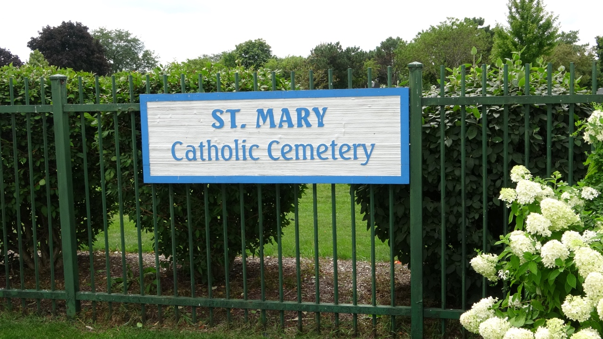

St. Mary’s Catholic Cemetery

St. Mary’s Catholic Cemetery and Mausoleum is located in Evergreen Park, Illinois, and borders Chicago from the southwest. Four Blues musicians are buried here including harmonica legend Little Walter. The cemetery sits between 87th Street & Hamlin Avenue in Evergreen Park, Illinois, 60805.